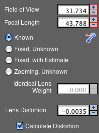
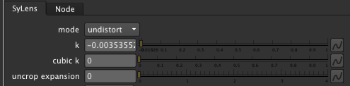
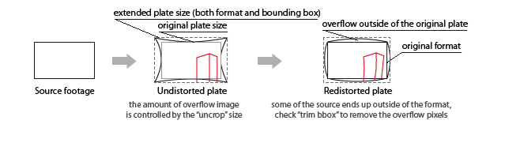

SyLens for Nuke
This plugin helps to prep images that have been undistorted using the Syntheyes matchmoving software. It implements the same undistortion algorithm
as the one embedded in Syntheyes and explained here.
Undistorting footage
Workflow A
To use the plugin, you will need to use the Lens Workflow script included with Syntheyes. When you have solved the shot, lens distortion will likely be
computed. After that, hit "Lens Workflow".

You will be presented with a choice dialog, and the option you need is the one called "Redistorted"

What it does is it undistorts your footage, and simultaneously makes your camera FOV a little wider and
your composition size (the film back) a little bigger, to accomodate for image parts that would disappear
if you would be undistorting the image by other means.
Now open the Shot->Image Preparation menu. Go to the Lens tab and note the values for Distortion and Cubic Distort.
Then note down the crop values on the Cropping tab.
Load your source footage into Nuke and punch in the values, here's how they are related:

and you should get exactly the same undistortion as the one you would have gotten from Syntheyes using the Save Sequence button.
Workflow B
Alternatively, you can punch in the lens distortion into the solver panel or let Syntheyes compute it for you

Then just punch in the computed distortion value into the k knob

You will probably note that the bounding box of your output will stick outside the format - this is perfectly fine, read below
how to deal with that
Redistorting footage
After all is done you might want to redistort either your whole comp or only the piece of CG that came to you from 3D (since it would have been
rendered from the undistorted film back size). To redistort, plug your oversize plate into a copy of SyLens with the "mode" switch set to
"redistort". See to it that other settings - k, kcube and uncrop - stay the same!
Cropping and bounding box
The workflow in a nutshell:

Explanation of the UI controls
- mode
- When set to undistort, SyLens will remove lens distortion. When set to redistort SyLens will apply lens distortion
- k
- Quartic distortion coefficient. This is calculated by Syntheyes and needs to be punched in here.
- kcube
- Cubic distortion modifier. If you used this in Syntheyes you can apply it here as well. Note that this will not be reapplied during redistortion
- uncrop expansion
-
- If you are dealing with pin-cushion distortion, there are parts of the image in the corners that will end up outside of your current
image format as the corners of the image are pulled outwards. To account for that, Syntheyes will usually add some "crop" values in the
Image Preparation screen to make your camera field of view a tad larger, and your output format a tad bigger to account for these corners.
To produce exactly the same image size at the end we need to know this crop value that SynthEyes applies.
- filter
- This selects the filtering algorithm used for sampling the source image, pick one that gives a better-looking result
- trim bbox
- When you apply distortion to the image, the bounding box that SyLens receives will usually grow. For example, when reintroducing distortion,
there will be overflow outside of the image:
When you are compositing redistorted items onto the source you generally don't want to have this overscan. When you enable trim bbox the
size of the bounding box will be reduced to fit within the actual output format, and no overscan pixels will be output or computed.
- debug info
- You can see what SyLens is doing. When you enable this, debug info will be written to STDOUT. If you start Nuke from the terminal then this
terminal will contain all the relevant output.
- only format
- If all you need is knowing the size of the background (for example to use as a background for the ScanlineRender node), but no actual pixels.
Checking this box will make Syntheyes output the format boxes only, but no computation of pixels will be done and no upstream pixels
will be requested or copied (and thing will speed up tenfold). When you use this as input for the 3D you can also enable and disable this
knob to check your alignment with the background.
Standard projection workflow caveats
SyLens creates images which have overflow bounding box, that is - bounding box that extends outside the image format. For that reason creating a roundtrip
projection setup needs a little work to get right.
To spare you some grief, here's how your DAG should look:

I am highlighting the special parameters from the node bin which differ from the defaults.
Important points:
- Project3d will only project the image outside of the format with "crop" checkbox disabled
- You need to render some overscan from your ScanlineRenderer to fill the bbox covered area. By default the renderer only renders within the format
- Use your cameras as usual (do not change the field of view)
For questions and comments shoot a mail to me _at_ julik.nl